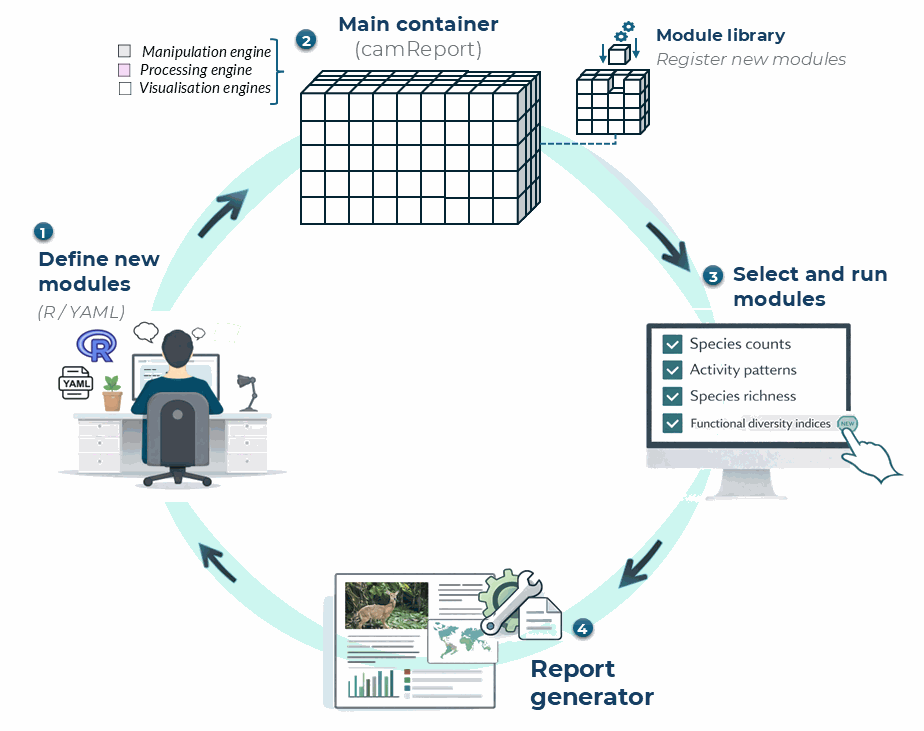

Managing and extending report modules
The Ecological Report is built from separate report sections, here referred to as modules. Each module is a small report component that can contain explanatory text, R code, or both. This modular structure allows users to extend the report by adding new sections, modifying existing ones, or changing the order in which sections appear.
A new module is defined in a YAML file and then registered with
camtrapReport using add_Module(). After the
module has been added, it is useful to test it before generating the
full report.

Figure 1. Modular workflow for defining, registering, selecting, and running report modules in camtrapReport.
Figure 1 summarises how new modules are added to the report workflow.
A module can be defined using R code or a YAML file, registered in the
module library, added to the main camReport object, tested
separately, and then included when generating the final Ecological
Report.
1. List existing modules
Before adding a new module, check which modules are already available in the package.
# List all available modules
list_Modules()
# Show all section names used in the report
section_names()2. Create a new module YAML file
A module can be written as a YAML file. The example below defines a
simple module called species_table, which adds a species
summary table to the Ecological Report.
Create a file called species_table.yml and save it in
your working directory.
name: species_table
title: "Species summary table"
parent: "results"
text: "This section provides a summary of the species detected in the camera-trap dataset, including their taxonomy and total number of captures."
code: |
#| echo: false
#| message: false
#| warning: false
species_table <- object$data_status$Species$Table
if (!is.null(species_table) && nrow(species_table) > 0) {
knitr::kable(
species_table,
caption = "Species detected in the camera-trap dataset."
)
} else {
cat("No species table is available for this dataset.")
}The name field defines the internal module name. The
title field controls the section title shown in the report.
The parent field defines where the module belongs in the
report structure, for example under methods or
results. The text field adds explanatory text,
and the code field contains the R code used to generate the
module output.
A scientific module should also document its purpose, required input fields, packages, preprocessing decisions, method assumptions, returned output, and interpretation limits. Prefer deterministic code, avoid modifying global state or source data, and qualify package calls explicitly where practical. If randomness is required, set and document a reproducible seed. Never place passwords, access tokens, personal data, or machine-specific absolute paths in a module file.
3. Add the new module
Module registries that are changed by users must be kept outside the
installed package directory. Start by copying the bundled registry to a
writable project directory, then add the new module to that copy. In
this example, species_table is placed before the
richness section.
# Create a writable project-level module registry once
bundled_modules <- system.file(
"reportSections",
package = "camtrapReport"
)
module_dir <- file.path(getwd(), "reportSections")
if (!dir.exists(module_dir)) {
dir.create(module_dir)
file.copy(
list.files(bundled_modules, full.names = TRUE),
module_dir,
recursive = TRUE
)
}
# Add a new module from a YAML file
added <- add_Module(
x = "species_table.yml",
before = "richness",
test = FALSE,
object = cm,
dir = module_dir
)
# Check whether the module has been added
list_Modules(dir = module_dir)You can change before = "richness" to another section
name if you want the new module to appear elsewhere in the report.
4. Install module dependencies
The module registry is registered automatically when
add_Module() is called. install_All() then
scans the #| packages: options of all bundled and
user-managed modules and delegates installation to pak.
# Discover and install all dependencies declared by all modules
install_All()Additional CRAN packages can be included explicitly. Known GitHub
dependencies configured by camtrapReport are included by
default, and configured GitLab dependencies can be included with
gitlab = TRUE:
install_All(pkgs = "readr")
install_All(gitlab = TRUE)If a user module depends on an unconfigured non-CRAN repository,
install that repository explicitly with pak::pkg_install()
before rendering the module.
5. Add the module to the current camReport object
The object returned by add_Module() contains the parsed
module. Attach it to the current report object and confirm that it
appears in the report catalogue.
cm$addReportObject(added$module)
listReportSections(cm)6. Test the new module
Before generating the full report, test only the new module. This is useful for checking whether the YAML structure, text, and R code work correctly.
# Test the new module only
testSection(
added$module,
object = cm,
view = TRUE
)If the module opens correctly in the browser, it can be included in the full report.
7. Generate the full report
After testing, generate the full Ecological Report with the new module included.
# Generate the full report
report(cm, view = TRUE)This workflow allows users to extend the Ecological Report with project-specific outputs, additional summaries, new figures, or custom interpretation sections.
Reordering, removing, and restoring modules
Module changes can be inspected and reversed before anything is deleted permanently:
# Validate active module definitions and inspect the hierarchy
list_Modules(validate = TRUE, dir = module_dir)
# Move a module within the report hierarchy
move_Module(
"species_table",
after = "captures",
parent = "results",
dir = module_dir
)
# Move a module and its children to the module trash
remove_Module("species_table", recursive = TRUE, dir = module_dir)
# Inspect active and deleted modules
list_Modules(include_trash = TRUE, dir = module_dir)
# Restore a removed module
restore_Module("species_table", test = TRUE, dir = module_dir)empty_trash() permanently deletes trashed module
definitions and should only be used after confirming that the YAML files
are backed up elsewhere. After any registry change, recreate or rerun
setup() on the camReport object, confirm the
selected sections with listReportSections(cm), test
affected modules, and generate the complete report in a new output file.
Review the resulting text, tables, figures, warnings, and citations as
carefully as any manually written scientific analysis.